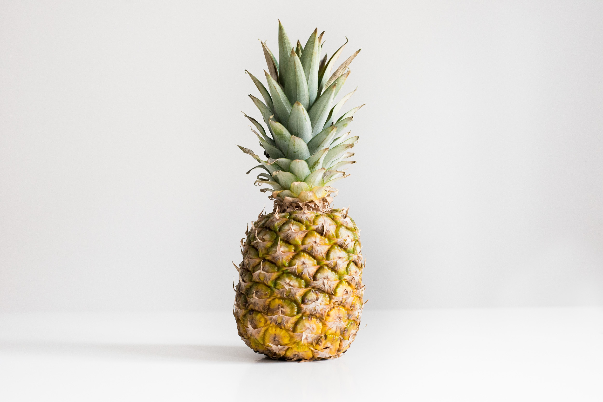

fruit - Pineapple
- Nectarine
- Orange
- Pineapple
Pineapple
대표적인 열대과일 중 하나. 외떡잎식물 벼목 파인애플과의 식물이다. 초본성 여러해살이풀에서 나오는 작물이라,
초본성에 바나나와 함께 채소로 보는 시각도 존재하나, 대체론 여러해살이 풀에서 나기에 바나나와 함께 과일로 분류한다.

중앙아메리카와 남아메리카 북부 원산으로 그곳에서는 오래 전부터 재배했고, 포르투갈, 스페인을 통해 세계 각지에 퍼졌다.
루이 14세가 껍질도 안 벗기고 손으로 집어먹었다가 혀를 다쳐 분노한 나머지 이 과일을 먹는 것을 금지하기도 했다.